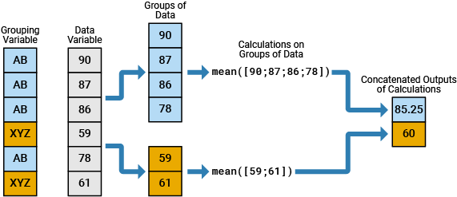
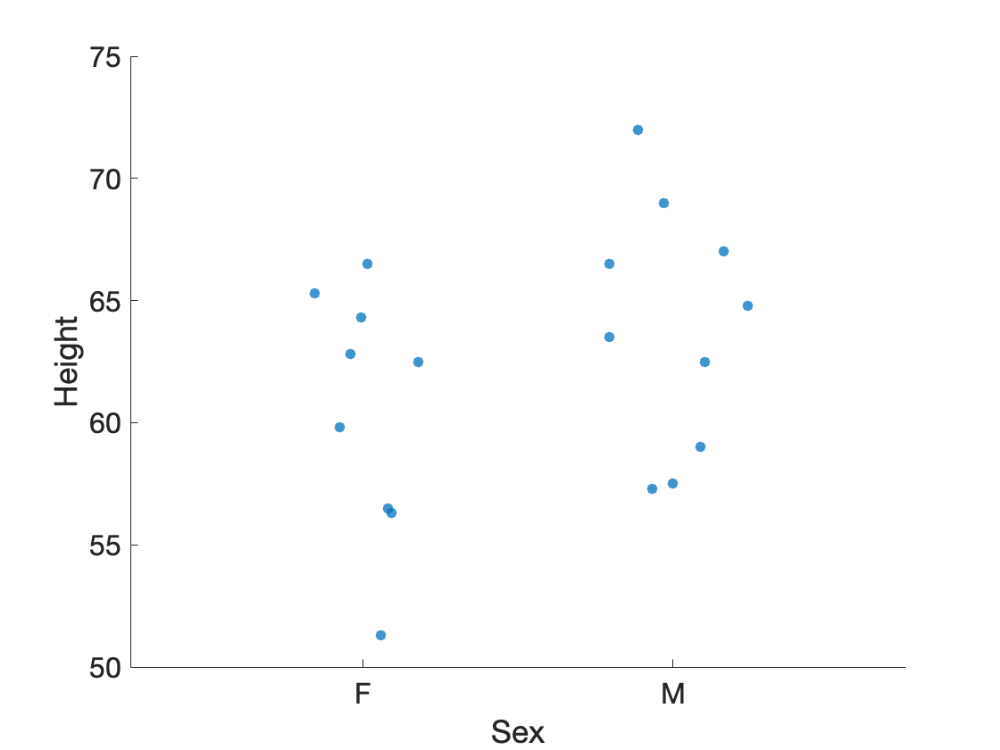
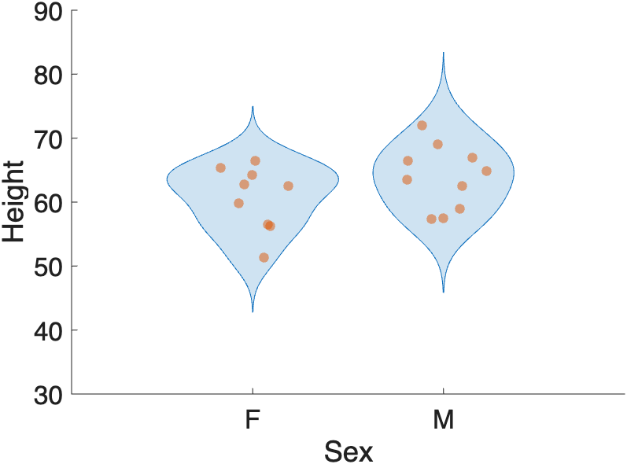
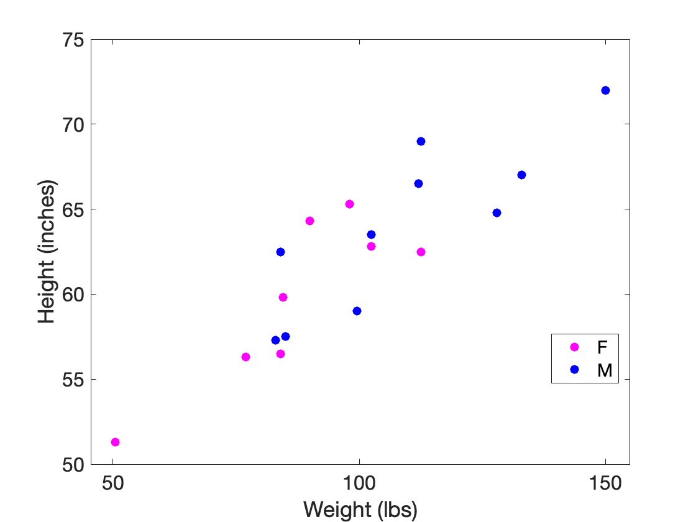

Group Statistics
Once we have our data tidied, we can get into the business of analyzing the data. Often, we want to calculate our stats on subgroups of the data so we can compare results across categories or groups. For example, we may want to compare the means of the female observations to the male observations. Such comparisons are known as Group Statistics.
Overview
Useful Resources
Useful Functions
Load the Data
I have saved a csv file of some tabular data in a secret online location. You can download this data using the following MATLAB code:
| Load | |
|---|---|
…after loading the data, we typecast the Name column to a string and the Sex column to a categorical array. And we get the following table of metrics from a group of adolescents.
T =
19×5 table
Name Sex Age Height Weight
_________ ___ ___ ______ ______
"Alfred" M 14 69 112.5
"Alice" F 13 56.5 84
"Barbara" F 13 65.3 98
"Carol" F 14 62.8 102.5
"Henry" M 14 63.5 102.5
"James" M 12 57.3 83
"Jane" F 12 59.8 84.5
"Janet" F 15 62.5 112.5
"Jeffrey" M 13 62.5 84
"John" M 12 59 99.5
"Joyce" F 11 51.3 50.5
"Judy" F 14 64.3 90
"Louise" F 12 56.3 77
"Mary" F 15 66.5 112
"Philip" M 16 72 150
"Robert" M 12 64.8 128
"Ronald" M 15 67 133
"Thomas" M 11 57.5 85
"William" M 15 66.5 112
…Remember, the columns contain the variables, so we have five variables: Name, Sex, Age, Height, and Weight. The rows contain the observations, so we have 20 observations. Row 1 contains all of the observed metrics from Alfred, whereas row 20 contains all the observed metrics from William.
This table has both Quantitative and Qualitative data. The Quantitative data columns are Age, Height, and Weight, whereas the Qualitative Data Columns are Name and Sex.
Grouping Variables
In our analysis, we want to calculate stats like mean and standard deviation of the Quantitative data (e.g. mean height), but we want to group those statistics using the Qualitative data (e.g. mean female weight). So, we need to use the Sex column as a grouping variable.
A grouping variable is a variable that helps group the observations (e.g. the rows).

In the above image, there are 2 groups, AB and XYZ. The data from the data variable column (in gray) is broken down into these two groups before processing
In our table, the Sex column contains a categorical array with two categories: M or F. In our stats, when we calculate stats like mean height or weight, we want to first group all the male rows together and calculate those stats, and then group the female rows together and calculate those stats.
Calculating Stats by group
The function groupcounts returns the number of group elements in a categorical array
| groupcounts | |
|---|---|
…Our data has one more male than female.
The function groupsummary calculates group statistics in one fell swoop:
| Group summary for Height | |
|---|---|
…Notice that we input the whole table into groupsummary as the first input (T). Then we indicate which variable to use as a grouping variable ("Sex"). Then we indicate the stats we want to run ("mean" and "std"). Finally, we indicate which variable we want the stats to be calculated on ("Height").
And we get our stats nicely packaged in a new table, s.
s =
2×4 table
Sex GroupCount mean_Height std_Height
___ __________ ___________ __________
F 9 60.589 5.0183
M 10 63.91 4.9379
…Notice in the table s, the variables now include "mean_Height" and "std_Height"
We can even run the stats on multiple variables, simply by change the last input:
| Group summary for Height and Weight | |
|---|---|
s =
2×6 table
Sex GroupCount mean_Height std_Height mean_Weight std_Weight
___ __________ ___________ __________ ___________ __________
F 9 60.589 5.0183 90.111 19.384
M 10 63.91 4.9379 108.95 22.727
…And now we have two addition variables in our stats table: mean_Weight and std_Weight.
Visualizing the Group Stats
Bar Plots
Once we have calculated the group statistics, we can plot the data from s as a bar plot with error bars
% set data
x = s.Sex; % grouping variable
y = s.mean_Height; % stat to plot
e = s.std_Height; % error
% plot data
figure
bar(x,y,FaceAlpha=0.5);
hold on
errorbar(x,y,e,'k',LineStyle="none")
ylabel('Height (in)')
…Notice the errorbar is a separate function from bar. Thus, we need to turn hold on to ensure that the error bar doesn't overwrite the bar. Also, errorbar requires at minimum three inputs: the grouping variable, the mean data (height of the bar), and the standard deviation (height of the error bar). bar only needs the grouping variable and the mean data.

Swarm Chart
Also known as a beeswarm chart, these types of visualizations plot every single data point in a cluster, or swarm, of points. These are very useful types of plots to display the true distribution of the data. They are also useful in conjunction with box or violin plots (see below)
Many plotting functions accept grouping variables to sort plots by group.
| Swarm chart of male and female heights | |
|---|---|

Here we plot a swarm chart in which we separate the male and female heights. Each dot represents one observation. Male heights trend slightly higher than female heights.
Box Plots
Similarly, we can create box plots organized by groups using the boxchart function. Here we overlay the box plots onto the swarm charts.
| Box Plot with Swarm Chart overlay | |
|---|---|

Notice the difference in the two function calls. For
boxchart, we using dot notation to index out the Sex and Height data. Forswarmchart, we inputted the table, T, and then indicated which variable names to plot or use as a grouping variable.
Violin Plots
A violin plot combines the features of a box plot with a kernel density plot, showing the distribution of the data.
| Violin plot with Swarm Chart overlay | |
|---|---|

…Notice the bulge in the violin plots indicate the highest concentration of data points.
Scatter
The function gscatter, included with the Statistics and Machine Learning toolbox, plots grouped data in different colors:
…notice again that here we input the column data (Weight, Height, Sex) from T using dot notation. We also include a couple extra inputs: 'mb' - indicates the two group colors to use, magenta and blue. 25 - indicates the size of the dot.

This scatter plot indicates that Height and Weight are positively correlated for both males and females. Notice that the function
gscatterautomatically includes a legend in the plot.